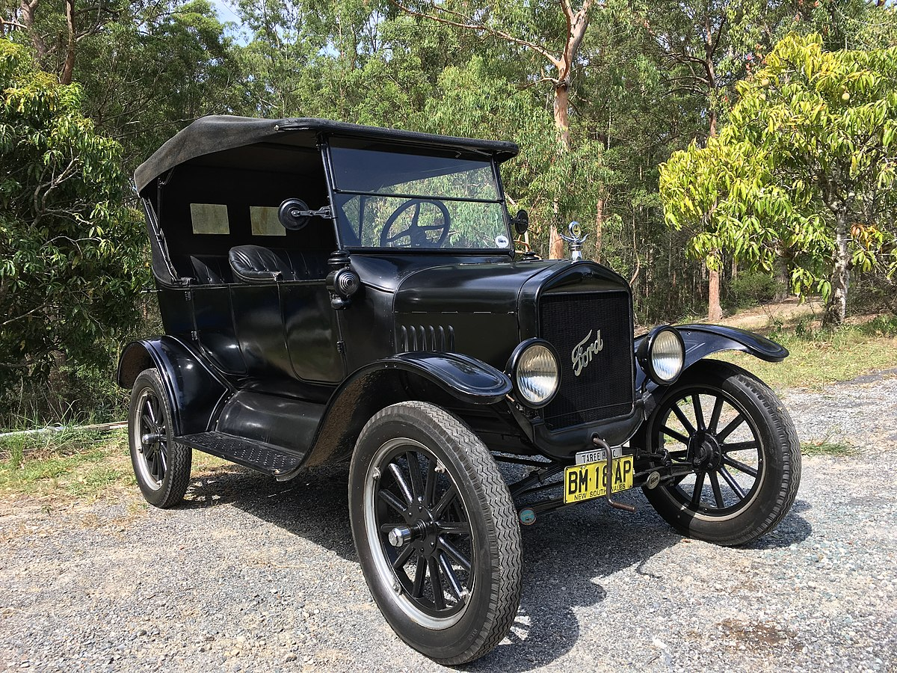

Перший Ford

Перший автомобіль, випущений під брендом "Ford", відомий як Ford Model T. Цей автомобіль був
представлений у 1908 році. Він був створений Генрі Фордом, засновником компанії Ford Motor Company.
Ford Model T був революційним автомобілем, який вплинув на автомобільну індустрію. Він був першим
масово виробленим автомобілем, доступним широкій публіці. Model T був простим у використанні,
надійним і економічним. Цей автомобіль оснащувався 4-циліндровим двигуном потужністю 20 кінських сил
і мав максимальну швидкість близько 70 км/год. Model T був вироблений на конвеєрному виробництві, що
дозволило знизити вартість автомобіля і зробити його доступним для більшої кількості людей.
Ford Model T відіграв важливу роль у поширенні автомобілів по всьому світу. Він відкрив нову епоху
автомобілебудування і став символом масової автомобілізації. Ford продовжує бути одним з найвідоміших
автомобільних брендів у світі, відомим своїми інноваціями, надійністю і широким модельним рядом.